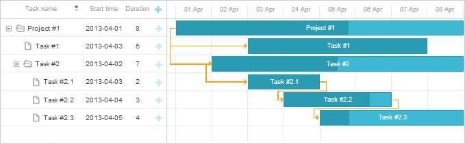

dhtmlxGantt allows you to sort data in the columns of the grid (on the client side).
There are 2 ways you can provide sorting in the grid:
Please note that Gantt can only sort tasks by values from data and doesn't sort values set by the template attribute of a column.
Once the user clicks on the header, the Gantt chart starts to display a special control indicating which column the table is currently sorted by and the direction of this sorting (ascending or descending). Each next click on the same header will reverse the sorting direction.

To enable sorting in the Gantt chart, set the sort property to true:
gantt.config.sort = true;
gantt.init("gantt_here");
Related sample: Built-in sorting
To sort the grid on some action or event (i.e. button click or page load), call the sort method.
Sorting on the button click
<input type='button' value='Sort by task name' onclick='gantt.sort("text", true);'>
<script type="text/javascript" charset="utf-8"> gantt.init("gantt_here");
gantt.parse(tasks);
</script>
Related sample: Using sorting methods
To apply a custom sorting function to the grid, call the sort method with the name of your custom function as the first (and only) parameter.
A custom sorting function is called for each pair of adjacent values and returns 1,-1 or 0:
Using a custom function to sort a Gantt chart
<input type='button' value='Sort by the number of holders'
onclick='sortByHolders(direction)'>
<script type="text/javascript" charset="utf-8"> var direction = false;
function sortByHolders(direction1){
direction = !direction;
gantt.sort(sortHolders);
};
function sortHolders(a,b){
a = a.users.length;
b = b.users.length;
if (direction){
return a>b?1:(a<b?-1:0);
} else {
return a>b?-1:(a<b?1:0);
}
};
</script>
Related sample: Custom sorting function
It's possible to specify a custom sorting rule for each particular column. There are three most common sorting scenarios per column:
1) disabling sorting for a column by setting sort to false
gantt.config.columns[1].sort = false;
2) sorting a column according to the provided sorting functions by setting sort to a function
gantt.config.columns[1].sort = function(a,b){
return custom_function(a,b);
};
A custom sorting function is called for a pair of task objects (a and b) and returns 1,-1 or 0:
3) sorting a column according to the values of a different field of the task by setting sort to that field
gantt.config.columns[1].sort = 'other_field';